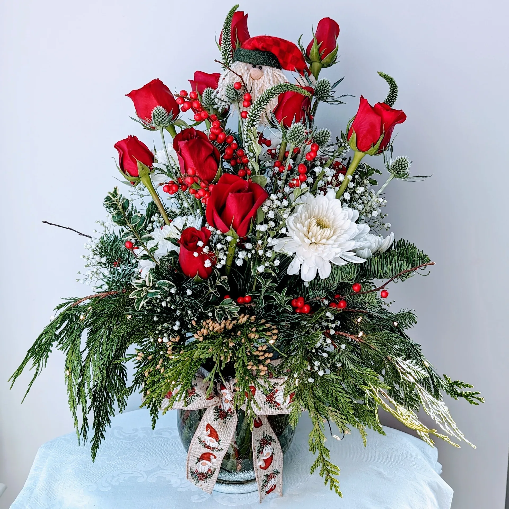

Right mood, right scale
The flowers should suit the moment — romantic, encouraging, grateful, festive, or quietly supportive.
Anniversaries, thank-you gestures, get-well wishes, holidays, dinner parties, and everyday moments all deserve florals that feel thoughtful rather than rushed.
These designs are created to match the tone of the occasion — warm, elegant, celebratory, comforting, or quietly generous.

Popular moments: Valentine’s Day, Mother’s Day, anniversaries, graduations, hostess gifts, office deliveries, and just-because flowers.
The flowers should suit the moment — romantic, encouraging, grateful, festive, or quietly supportive.
Holiday pieces and everyday arrangements alike are built with a fresh, artist-led point of view instead of a standard formula.
Whether it’s heading to a home, office, or gathering, timing and presentation are handled with care.
Tell the studio who the flowers are for, what you’re celebrating or expressing, and any preferred colors or style notes.
An arrangement is shaped around the occasion, your budget, and what feels most fitting.
Each piece is made to order in Fairfax with a focus on balance, movement, and emotional tone.
Choose the easiest option for your timeline and let the flowers do the talking.
This page now reflects the broader service scope of the live site — not just holiday arrangements, but all the small and meaningful floral moments in between.
Need a refined thank-you bouquet, an uplifting get-well arrangement, or something seasonal for a dining table or office? The studio can tailor the design accordingly.


Tell the studio what the moment calls for, and the flowers will be shaped around that intention.